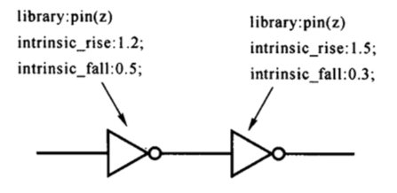
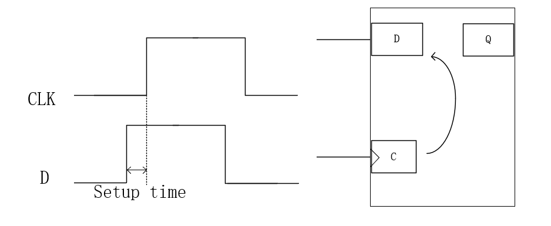
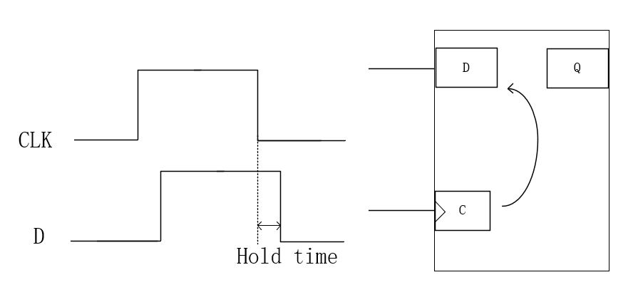
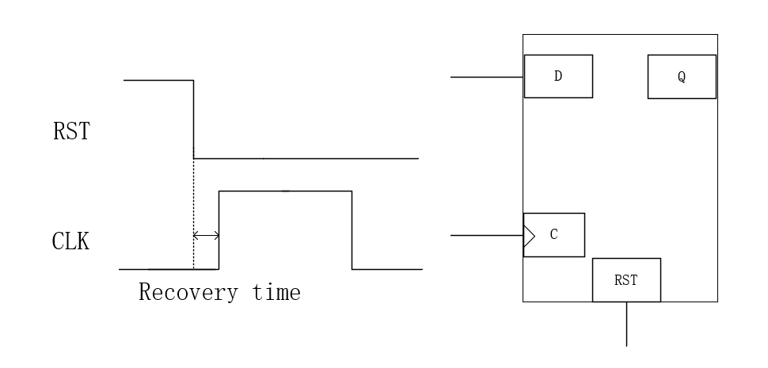
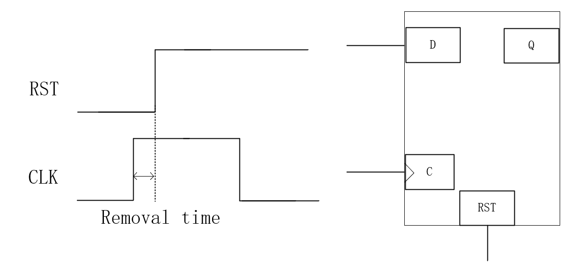
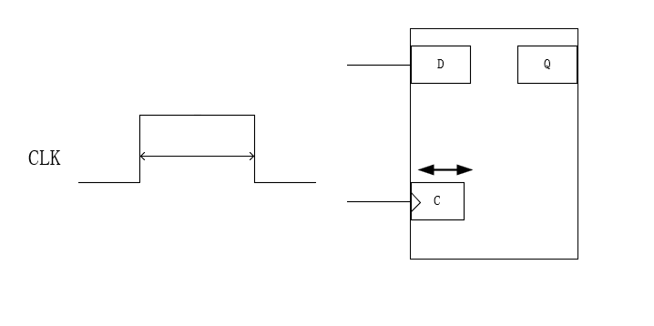
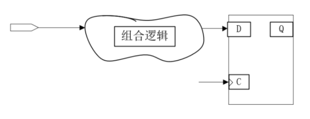
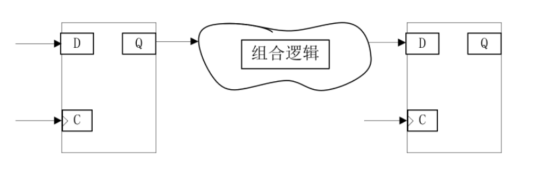
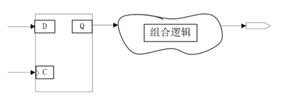
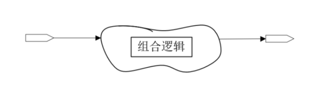

静态时序分析 #
STA概述 #
静态时序分析（STA）是通过工具对同步电路中所有存在的时序路径进行分析，检查是否存在时序违例，是标准的timing Sign off方法
主要都是针对同步电路
时序的验证方法:
- 动态时序分析（Dynamic timing simulation）
- 静态时序分析（Static Timing Analysis）
动态时序分析（Dynamic Timing Analysis, DTA） #
- 方法特点：
- 基于仿真方法，通过施加具体输入测试向量，验证设计在特定条件下的时序行为。
- 需要设计功能和测试向量的配合。
- 优势：
- 功能覆盖：能够验证特定输入条件下的时序行为。
- 精确性：仿真电路的真实响应，能发现实际条件下的潜在问题。
- 劣势：
- 依赖测试向量：质量（覆盖率）取决于输入测试向量的全面性。
- 仿真时间长：随着测试向量数量增加，仿真时间显著增长。
- 适用场景：
- 用于验证复杂场景下的时序问题。
- 适合后仿真阶段的功能和时序联合验证。
静态时序分析（Static Timing Analysis, STA） #
- 方法特点：
- 采用穷举型逻辑，通过计算电路中所有可能路径的时序约束来验证设计的时序完整性。
- 不需要特定输入向量，独立于信号值。
- 优势：
- 全面性：STA 对设计中的所有路径进行分析，确保所有时序检查无遗漏（如 setup/hold 检查）。
- 效率高：不需要仿真输入，分析速度快，特别适合大规模设计。
- 角点分析：可以在不同 PVT（工艺、温度、电压）角点快速分析。
- 适用场景：
- 用于设计的早期和后期阶段进行全面的时序验证。
- 适合检查所有可能的时序路径。
对比总结 #
| 特性 | 静态时序分析（STA） | 动态时序分析（DTA） |
|---|---|---|
| 输入依赖 | 无需具体测试向量 | 需要测试向量 |
| 分析范围 | 全面，覆盖所有路径 | 受测试向量覆盖率限制 |
| 分析速度 | 快 | 慢 |
| 验证场景 | 适合早期验证，分析所有角点 | 适合特定功能验证和实际条件下 |
所以，STA就是套用特定的模型，针对特定的电路在给定的时序约束上面分析设计是否有时序违例，所以进行STA一般需要3个文件
- 时序模型 ：lib文件
- 特定的电路 ： Netlist文件
- 给定的时序约束 ： sdc文件
常用的工具有 Synopsys: Prime Time（常用） Cadence: Tempus
本教程选用Prime Time作为时序分析的工具
STA分析流程 #
PT和DC综合的过程和命令都是十分相似的，与综合过程中对时序检查的区别：PT使用的是更加精准的时序模型，并且使用PT做STA会对所有的corner，也就是工艺角去分析，而综合一般只做一两个corner
graph TD
A[导入时序文件] -->B[创建时序路径] -->C[设置时序分析模式]-->D[设置时序分析参数]-->E[产生时序报告]-->F[保存时序]-->G[时序修复]-->H[产生sdf]
我们通过在terminal输入
pt_shell
使用Prime Time的命令
第一步、读入文件 #
STA需要读入的基本文件有：
- 时序约束文件：sdc文件，里面是关于时序的各种约束
- 工艺库的时序模型：工艺库时序lib文件
- 逻辑综合的网表和spef文件等 ：DC综合产生的门级网表与RC提取的spef文件
工艺库的时序模型 #
时序分析的路径 #
对于静态时序分析来说，一条路径上的时序大致由3部分组成：
- Cell delay ：信号通过每个cell花费的时间
- Net delay ：每个cell的连线中的delay
- Cell check time ： 检查单元是否满足时序要求时所需要考虑的特定时间。包括两个方面：Setup Time（建立时间）、Hold Time（保持时间）
什么是Setup Time和Hold Time？
Setup time：逻辑单元（通常是触发器或寄存器）要求输入信号在时钟沿到来之前，必须提前稳定的时间。这是为了确保信号在时钟沿到达时被正确捕获。
Hold Time：指信号在时钟沿到达之后，必须保持稳定的时间窗口，以避免数据丢失。
首先我们来了解一下什么是时序弧，在计算路径延时的时候，工具是把每一条路径分成时序弧（timing arcs）来计算

如果两个pin之间的timing存在因果关系，那么我们就把这种时序的关系叫做时序弧（timing arcs），主要分为定义时序延迟和定义时序检查两种。
每个cell的时序弧定义在lib文件里面，net之间没有时序弧，因为他们的延时是由RC参数计算出来的。
时序延时 #
时序延迟是描述信号在电路中传播的时间，通常分为以下几种类型：
- 组合逻辑延迟（Combinational Logic Delay）
- 时序逻辑延迟（Sequential Logic Delay）
- 三态门逻辑延迟（Tri-state Logic Delay）
组合逻辑延迟： #
组合逻辑延迟指的是信号在组合逻辑电路中传播所需的时间。组合逻辑电路的输出只依赖于当前输入的状态，不依赖于过去的状态，因此其时序延迟主要由电路内部的门延迟（如与门、或门、非门等）决定。
组合逻辑延迟可以按照输入输出信号的变化进行分类，主要包括：
- Positive unate：输入输出信号变化相同
- Negative unate：输入输出信号变化相反
- non unate：输出信号不由输入决定
时序逻辑延迟 #
时序单元延迟，定义时序器件的时钟引脚到达输出端口的延迟，叫做边缘时序弧（Edge Timing arc）
三态门逻辑延迟 #
三态门（Tri-state Gate）是一种具有三个状态（高电平、低电平、三态）输出的逻辑门。在数字电路中，三态门的输出可以是高电平、低电平或者高阻抗状态（Z）。当输出处于高阻抗状态时，它相当于被断开，不对电路造成影响。
三态门逻辑延迟定义三态门组件使能信号到输出的延时时间
时序检查 #
建立时间检查 #
 定义时序组件所需要的Setup Time，即数据信号需要提前多久到达
保持时间检查 #
 定义时序组件所需要的Hold Time，即数据信号需要保持多久时间稳定不变
恢复时间检查 #
 定义时序组件时钟沿到来之前，异步复位/置位信号不准启动的时间
清除时间检查 #
 定义时序组件时钟沿到来之后，异步复位/置位信号不准启动的时间
脉冲宽度检查 #
 定义时钟信号需要维持稳定的最短时间，依据信号维持在0或者1的电位分为2类，High pulse width和Low pulse width
具体命令 #
与DC综合类似，在读取文件前，我们需要设置需要的各种参数和pt搜索文件的路径
使用下面命令
set search_path [list \
./ \
../ \
xxxx \
]
set link_library [list "*" xxxx.db]
read_verilog xxx.v
current_design xxxx
link_design -verbose
read_sdc xxx.sdc
read_parasitic xxx.spef
在成功读入这些文件之后，如果我们读入了spef文件，那我们需要检查反标率（Annotated coverage）
反标率（Annotated Coverage） 是指在芯片设计的信号完整性和时序分析中，使用标注的寄生参数信息来覆盖整个设计的比例。这个指标表明有多少电路网线的寄生参数（如电阻、电容等）是通过 SPEF 文件（或类似文件）提供的精确数据标注的，而不是通过工具默认的估算模型生成的。
使用命令
report_annotated_parasitics
报告反标率
real nets中的complete net需要保证100%的coverage
如果设计里面的反标率不是100%，代表设计里的某些net上其实是没有延迟的，最后得到的结果是不准确的。
第二步、创建时序路径 #
STA是基于时序路径去产生时序报告的，每条时序路径都能找到起点和终点。
起点：输入端口和时序器件的CLK端
终点：输出端口和时序器件的date、input端
时序路径可以分为4类：
1、输入端到触发器数据输入（in2reg）

2、触发器时钟输入到触发器数据输入（reg2reg）

3、触发器时钟输入到输出端（reg2out）

4、输入端到输出端（in2out）
